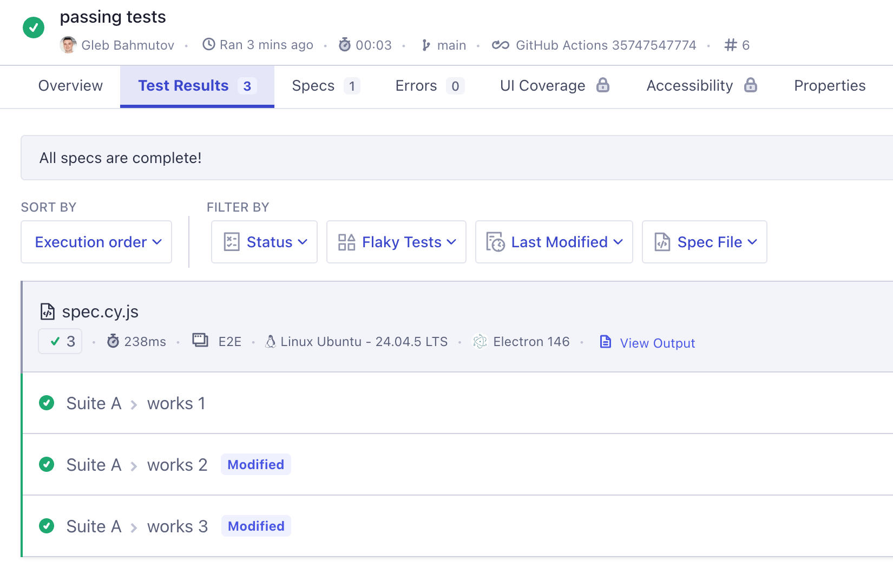
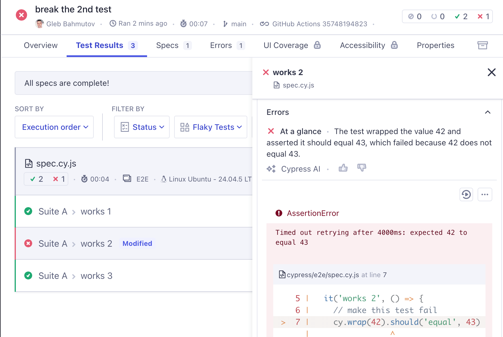
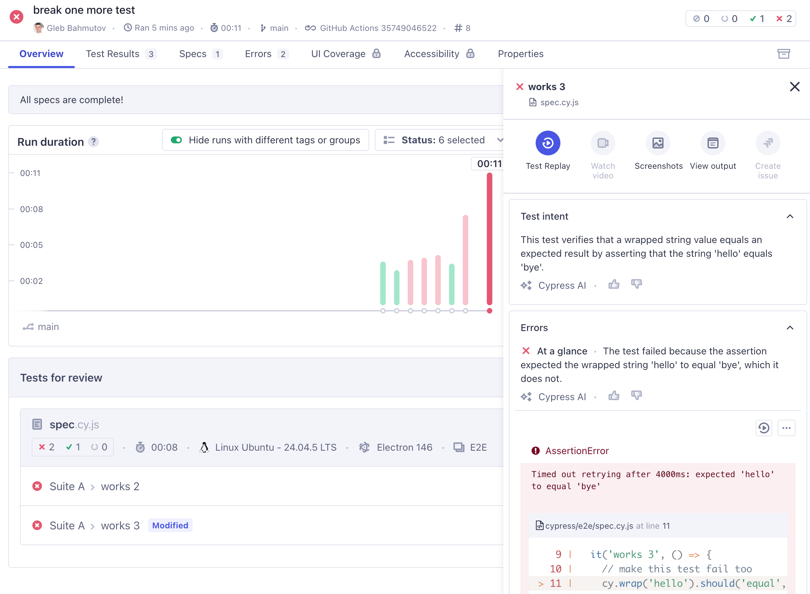
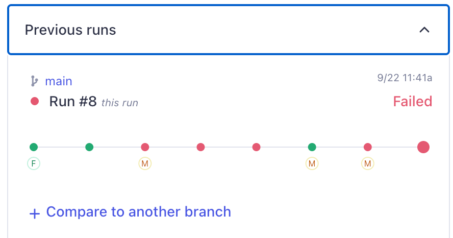
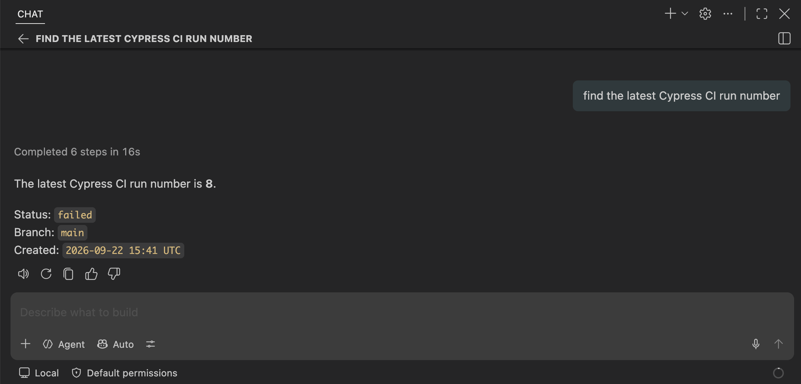
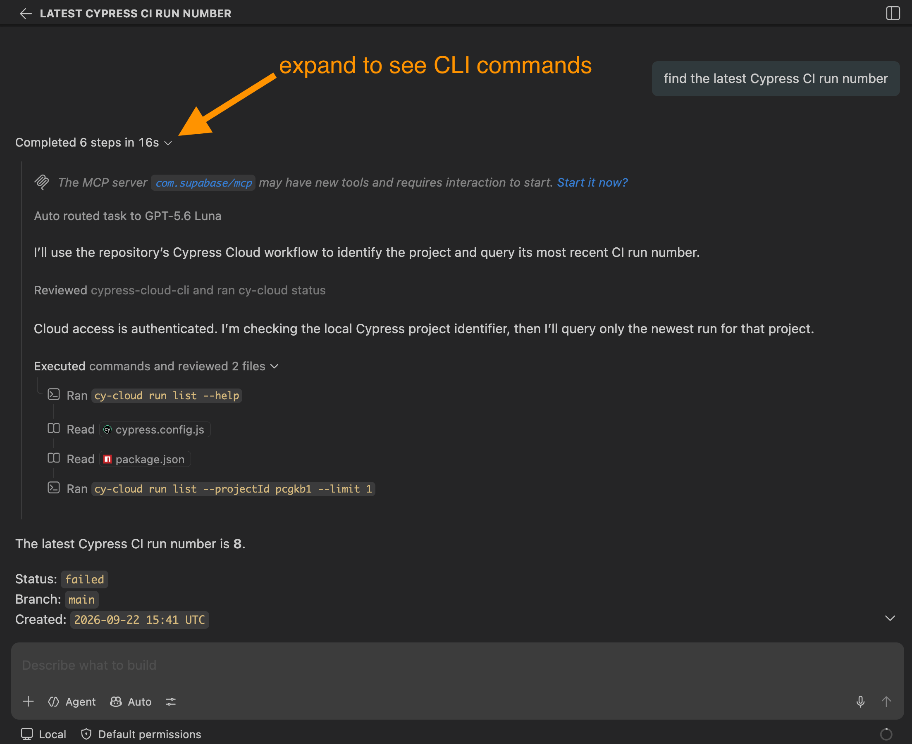
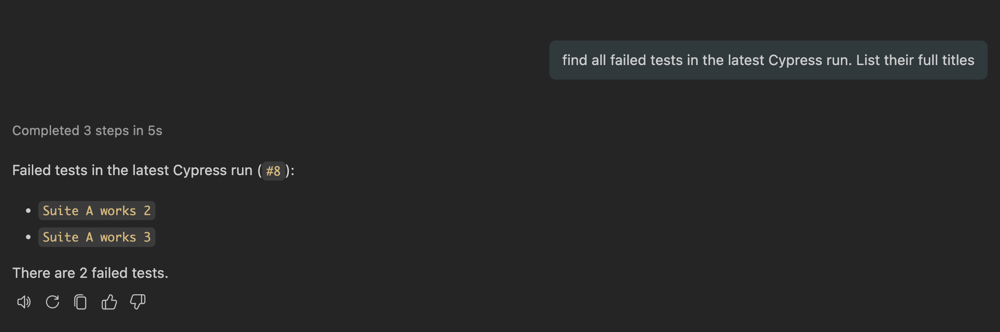
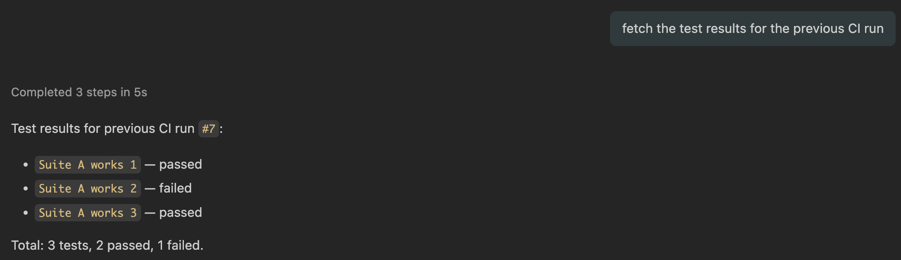
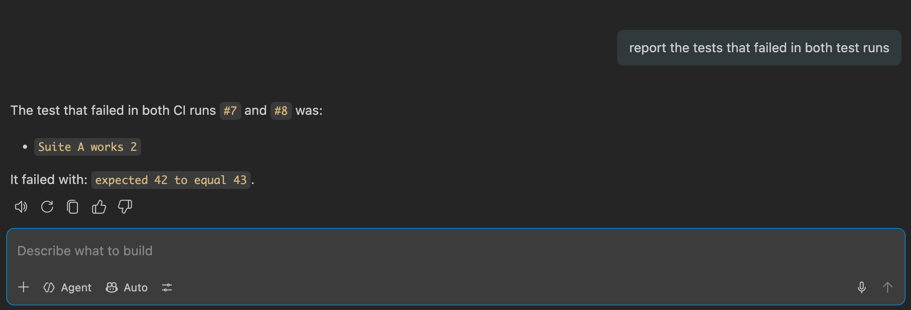

name:ci on:push jobs: cypress-run: runs-on:ubuntu-24.04 steps: -name:Checkout uses:actions/checkout@v7 # Install dependencies with caching # and run all Cypress tests -name:Cypressrun # https://github.com/cypress-io/github-action uses:cypress-io/github-action@v7 with: record:true env: CYPRESS_RECORD_KEY:${{secrets.CYPRESS_RECORD_KEY}}
Tests are green

Break one test
Great. Now let's break one test on purpose
cypress/e2e/spec.cy.js
1 2 3 4 5 6 7 8
describe('Suite A', () => { it('works 1', () => {}) it('works 2', () => { // make this test fail cy.wrap(42).should('equal', 43) }) it('works 3', () => {}) })

The Cypress Cloud shows the error message and the stack pretty well. We could also look at the test replay to see each command, but our tests are simple enough to get the gist from the text of the message.
Break one more test
Imagine someone breaks the 3rd test
cypress/e2e/spec.cy.js
1 2 3 4 5 6 7 8 9 10 11
describe('Suite A', () => { it('works 1', () => {}) it('works 2', () => { // make this test fail cy.wrap(42).should('equal', 43) }) it('works 3', () => { // make this test fail too cy.wrap('hello').should('equal', 'bye') }) })

So now we have 2 broken tests. One was broken for two runs, another test just switched from passing to failing (read about Cypress test statuses in the blog post Cypress Test Statuses). Let's look at the test run; of course we can just use the browser, but wouldn't it be nicer to access the test results from our terminal, or use them in our pipelines and agent chats?
Cloud CLI
My first tool for accessing the recorded test results is the Cloud CLI
1 2 3 4 5 6
# install the tool once $ npm install --global @cypress/cloud # login $ cy-cloud login # any time you need to remember CLI commands $ cy-cloud --help
Quick note: Cloud CLI allows an interactive login using a browser and OAuth, or you can use a personal token for CI environments (read-only).
Let's see the latest run results
1 2
$ cy-cloud run list Optional argument '--projectId' is required
Oops, we need to tell CLI what project we are working on. Our project ID is public, written in the cypress.config.js file
Cloud CLI outputs JSON, making it extremely convenient for connecting with other tools. I personally prefer focusing on the last N runs, lets see the last three runs.
We see the 2 failed tests with the error messages. Now I might want to investigate further. Which test has failed previously? Because that is what I want to prioritize: investigating those tests that used to pass and now are reliably failing. In Cypress Dashboard, the "Previous runs" panel gives me this information visually

We can check the test status from the CLI by using its testId property and fetching the status for each run. We know that the test with id 73640d79-f57f-4f06-93e3-cd303c1b31e8 has failed in the latest run 8. Let's find out its status in the run 7. Because the test ids change between the runs, we need to fetch the failed tests in the run 8
1
$ cy-cloud test list --projectId pcgkb1 --runNumber 7 --status failed
We can match the test titles between the test run using the "testName" array which has strings for the suite names plus the test title itself. To simplify it all, we can write a script
Triage script
Let's find all tests that failed in the latest test run AND failed previously. Here is my version in triage.js.
// fetch the failed tests for the previous run const previousRunNumber = latestRunNumber - 1 const failedTestsPreviousOutput = execSync( `cy-cloud test list --projectId ${projectId} --runNumber ${previousRunNumber} --status failed`, { encoding: 'utf-8' }, ) const failedTestsPrevious = JSON.parse( failedTestsPreviousOutput, ).tests const testTitlesPrevious = failedTestsPrevious.map((test) => test.testName.join(' > '), ) console.log( 'Found %d failed tests in the previous run', testTitlesPrevious.length, ) testTitlesPrevious.forEach((title) =>console.log(' -', title))
// filter the latest failed tests by title matching previously failed test const oldFailedTests = testTitles.filter((title) => testTitlesPrevious.includes(title), ) console.log( 'Found %d failed tests in the latest run that failed before', oldFailedTests.length, ) oldFailedTests.forEach((title) =>console.log(' -', title))
Let's run it
1 2 3 4 5 6 7 8 9 10
$ ./triage.js Triage the last two Cypress runs Latest run number: 8 Found 2 failed tests - Suite A > works 2 - Suite A > works 3 Found 1 failed tests in the previous run - Suite A > works 2 Found 1 failed tests in the latest run that failed before - Suite A > works 2
Of course, you can flip the logic and report newly failed tests.
Triage using AI
Writing a script just to triage the tests might be tedious. Often we want to "explore" the test results, without hardcoding a strict algorithm. We also don't want to remember Cloud CLI arguments and juggle multiple command line arguments while thinking about test results. We just want to fetch some information:
find the latest Cypress CI run number
find all failed tests
fetch results for the previous CI run
report the tests that failed in both
Calling Cloud CLI that knows how to call Cypress results API is just details. Thus we can let an AI skill released by Cypress Company manage these details.
I am using GitHub Copilot, which is included in the default agents for skills tool. The installation creates several files
skills-lock.json file keeps track of the locally installed AI skills in my project
.agents/skills/cypress-cloud-cli/SKILL.md is produced by Cypress and describes to AI agent all the cy-cloud project ... commands
Let's use Copilot to triage the recorded Cypress test results. First, the latest project run number.

Expand the command summary to see the agent using cypress-cloud-cli skill to call cy-cloud commands

What are the failed tests in the latest run 8? Ask AI agent, it should be able to fetch the individual tests

Note: since we are running the prompts in the same chat, the agent "knows" that the latest run number was already discovered "8". We can now go to the previous run

The agent should be smart enough to understand that the "previous run" can be computed from number "8". Now let's make the agent use the chat context and match the two list of failed tests

So there you have it:
you can access Cypress Cloud test results via its CLI tool
you can write small scripts to call multiple CLI commands fetching the information needed
or you can make your AI agent use the Cypress Cloud CLI skill to call the correct Cloud CLI commands and then report the results
The AI approach is flexible: you can explore the test runs, analyze the test errors, group errors in "buckets", etc. The scripting approach is fast and does not cost you token money; if you are always accessing the same test run information, a script might be the best approach. Finally, you can call Cloud CLI yourself when needed.